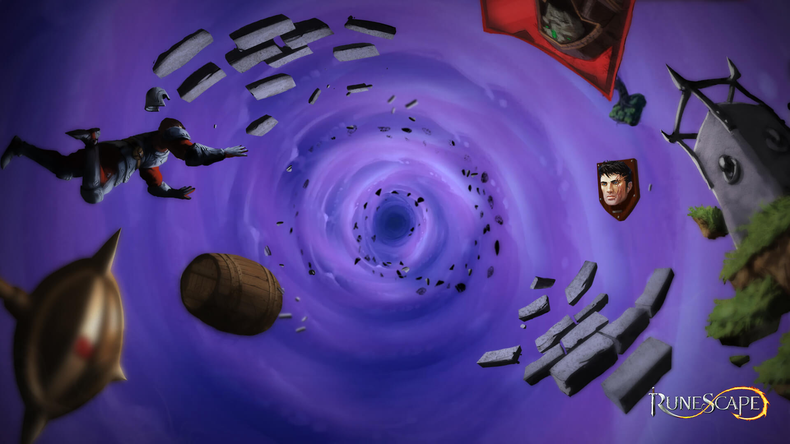
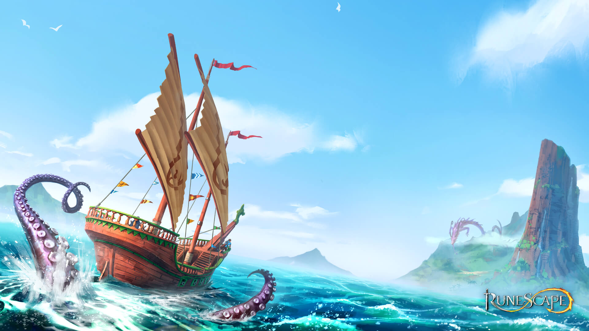
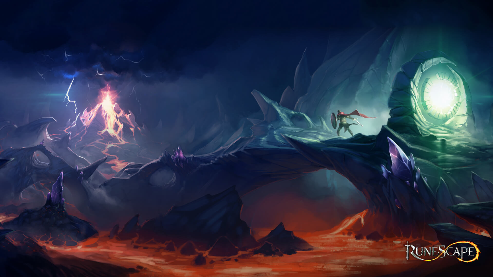
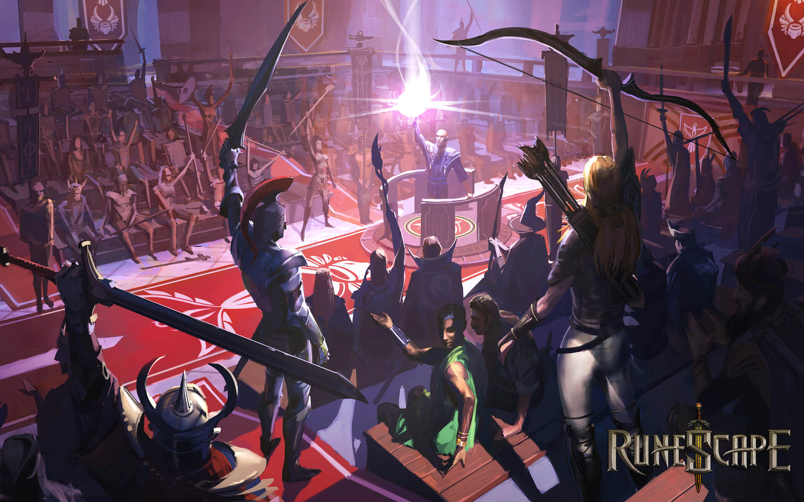
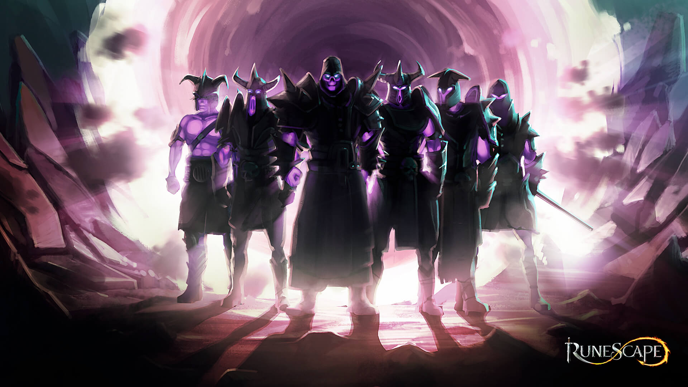
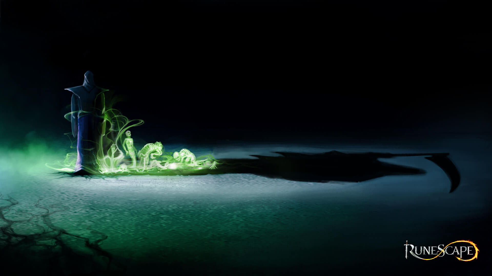

Double XP de 6 a 16 de novembro
O evento de XP em dobro do RuneScape 3 acontece de 6 a 16 de novembro. Boa hora para treinar aquela skill que está parada.
Categoria: Atualizações

Hardcore Worlds chegam ao Old School RuneScape
Os mundos Hardcore já estão no ar, com uma única vida e morte permanente. Um desafio novo para quem gosta de arriscar.
Categoria: Comunidade

Ghrazi Blood Knights ganha modo solo
O modo solo desse conteúdo está previsto para 9 de novembro, depois do lançamento inicial só para duplas.
Categoria: Atualizações

Migração para as contas Jagex começa em 17 de novembro
A transição completa para as contas Jagex começa em 17 de novembro. Vale se organizar com antecedência para não perder o acesso.
Categoria: Suporte

Itens de microtransação viram GP em 23 de novembro
Em 23 de novembro, esses itens serão convertidos em GP, com taxa menor do que a do evento Well of Restoration, que vai de 16 a 23 de novembro.
Categoria: Suporte

RuneScape Reignited chega em 2 de dezembro
A nova experiência inicial foi pensada para quem está começando ou voltando ao jogo. Um teste de assinatura para novos jogadores e retornantes vai de 2 a 12 de dezembro.
Categoria: Comunidade